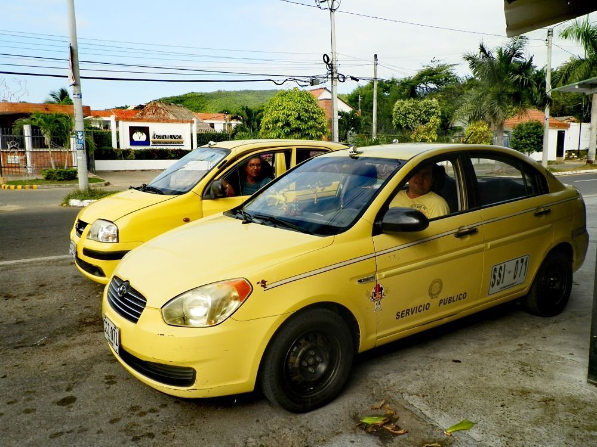
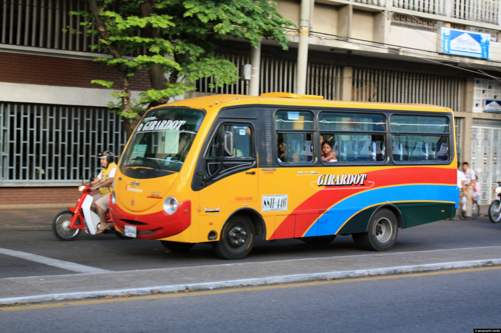
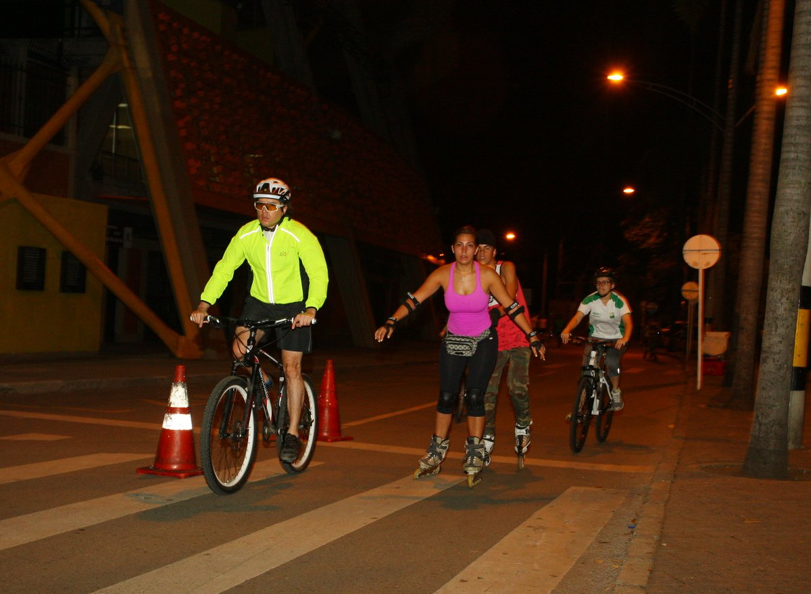
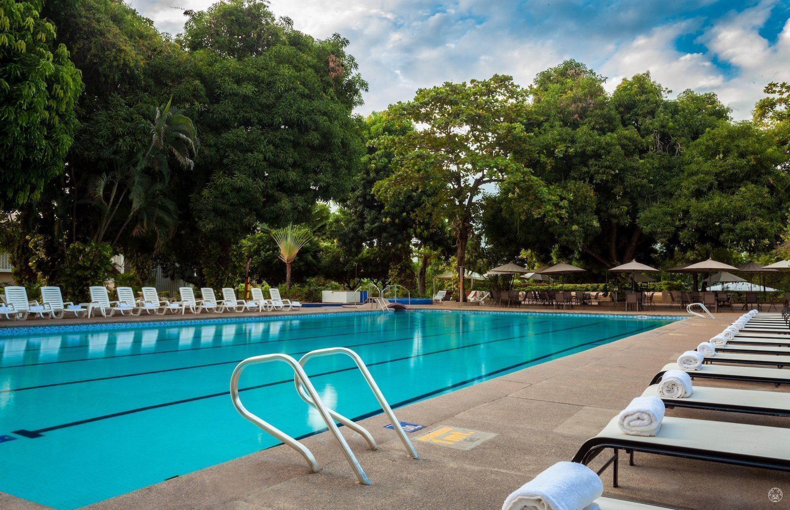
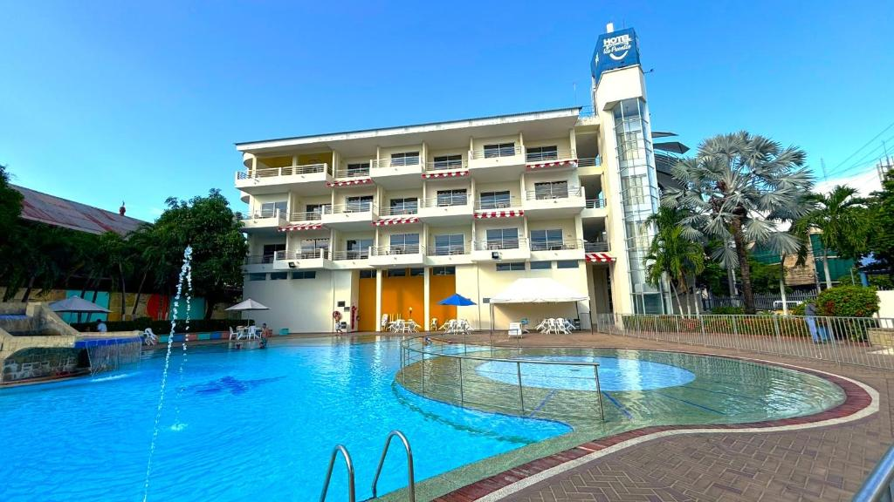
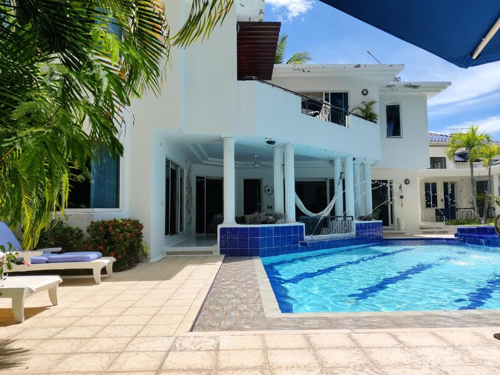

Taxis y Mototaxis
ES: Principal medio de transporte urbano rápido y económico.
EN: Main fast and economical urban transport method.

ES: Principal medio de transporte urbano rápido y económico.
EN: Main fast and economical urban transport method.

ES: Rutas colectivas que conectan el centro con barrios y municipios vecinos.
EN: Collective routes connecting the city center with neighborhoods and nearby towns.

ES: El Camellón del Comercio es ideal para recorrer a pie o en bicicleta.
EN: El Camellón del Comercio is ideal for exploring on foot or by bicycle.

ES: Ofrece 3 piscinas, sauna, pistas de tenis y voley playa.
EN: Offers 3 swimming pools, sauna, tennis courts, and beach volleyball.

ES: Gran piscina con toboganes y un spa a 500m del río Magdalena.
EN: Large pool with slides and a spa 500m from the Magdalena River.

ES: Hermosa casa campestre con piscina al aire libre, jardín y terraza.
EN: Beautiful country house with an outdoor pool, garden, and terrace.